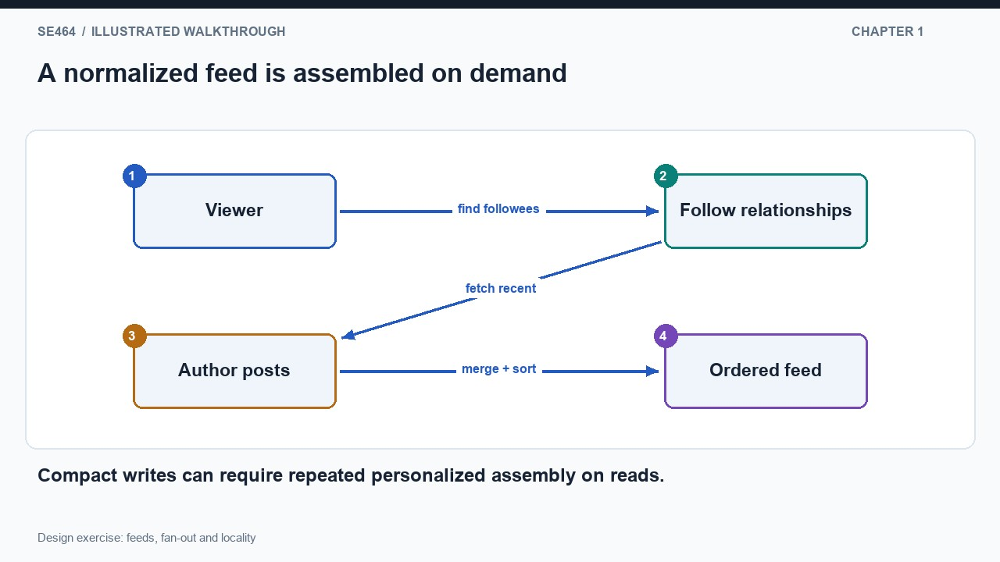
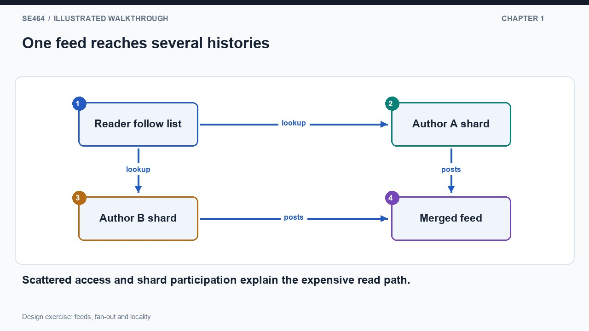
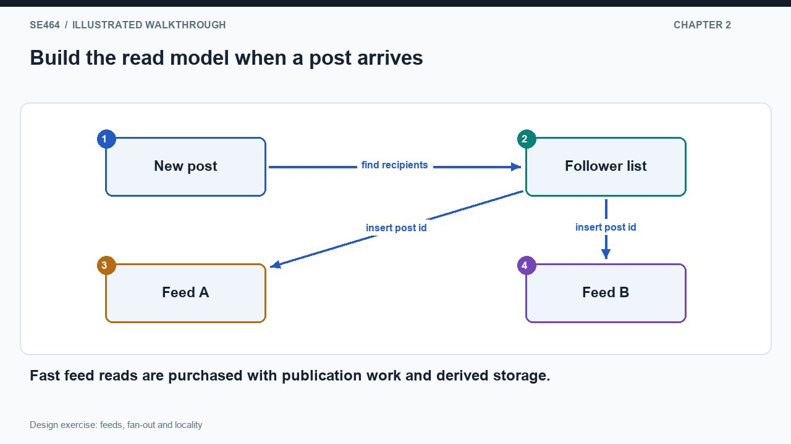
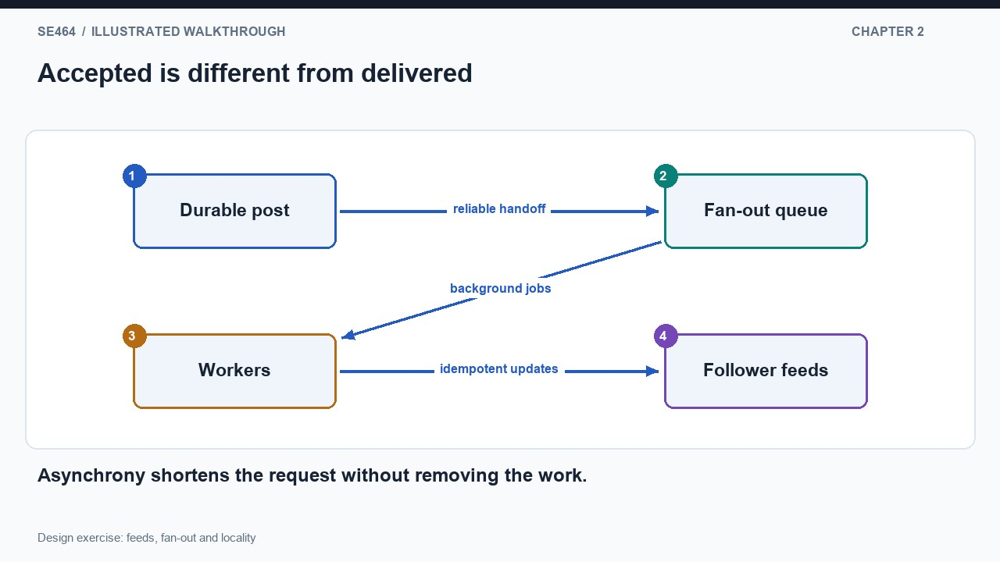
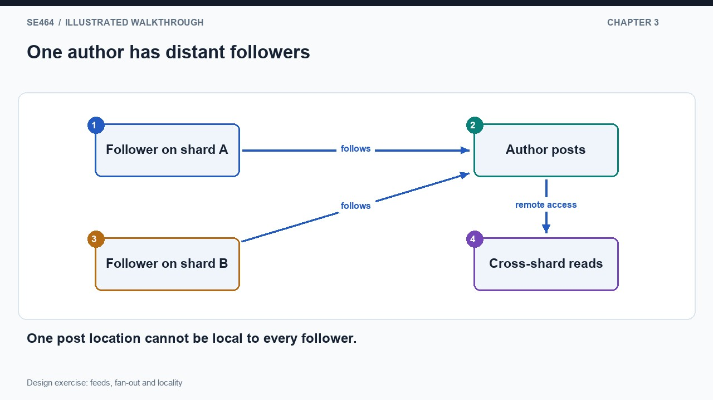
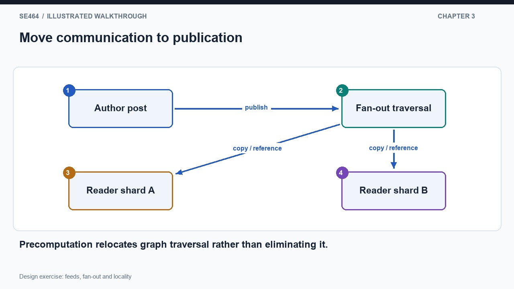
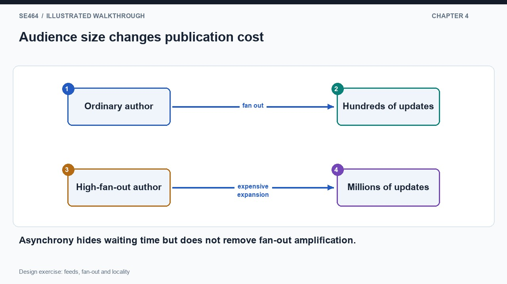
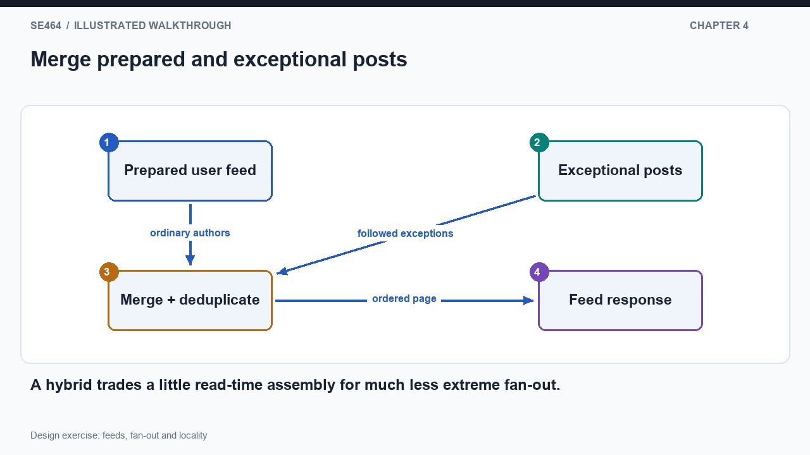

Compare read-time and write-time feed assembly, partitioning and celebrity fan-out.
Start with a simple social-feed model: users, follow relationships and posts. Publishing a post inserts one record associated with its author. To read a viewer's feed, find the authors that viewer follows, retrieve their recent posts, join any required author information and order the result. The write path is compact because each post has one authoritative representation. The read path reconstructs a personalized view from several sets of records. This is a sensible starting point, especially at modest scale. The problem is not that relational databases cannot store social data; it is that a heavily used personalized query can require increasingly expensive access to scattered data as the workload grows.
Follow one reader who subscribes to three authors. Their posts are mixed with many other authors' posts in storage and may live on different shards. Indexes help locate relevant rows, but they do not make every reader's selected posts physically adjacent. A feed query can require multiple lookups, remote requests and a merge before returning a small page. Storage systems generally benefit from useful locality, while many small scattered accesses add work and latency. The diagram should branch from the reader's follow list to several author histories and then converge at a sorted feed. This makes the read amplification visible instead of attributing the delay vaguely to a join.
Evaluate the baseline before replacing it. Measure feed reads per second, followed-author counts, posts examined per request, cache reuse and shard participation. Pagination should use stable ordering and bounded work rather than retrieving an unlimited history each time. An index or a better query plan may be enough for the current scale. If reads dominate and the same assembly work repeats frequently, precomputing a reader's view becomes attractive. That change trades work at read time for work when posts arrive, and it introduces derived state that must remain usable after retries and failures. The design exercise is to compare those costs under a stated workload, not to declare one storage category universally fast and another universally slow.


No. Query shape, indexes, locality, caching and workload determine cost.
Prebuilding feeds moves the join's work earlier. When an author publishes, the system finds the followers and inserts a reference or suitable representation into each follower's materialized feed. A later feed read can use the viewer's identifier to retrieve a compact prepared result. Partitioning feeds by viewer makes the common read involve a bounded storage destination rather than a growing collection of author shards. The benefit is concrete: the reader does less assembly while waiting. The cost is equally concrete: one publication creates many feed updates, and the system stores derived copies. A post with a thousand followers can create roughly a thousand insertions rather than one.
Do not make the publishing request wait for every follower update. First durably record the post and the work that must be performed, then let background workers update feeds. The client can receive an accepted response while propagation continues. This reduces the publisher's waiting time but does not reduce total fan-out work or guarantee that every follower sees the post immediately. In the diagram, separate durable acceptance from background completion. A queue absorbs temporary imbalance between incoming publications and worker capacity, but sustained overload makes backlog and delivery delay grow. Monitor the age of pending work as well as queue length, because a small number of huge fan-out jobs can still produce a long delay.
Retries and partial completion are normal cases. A worker can update some feeds and fail before acknowledging the job. Reprocessing should not create duplicate feed entries, so use a stable post identifier and an idempotent insertion rule. Storing the post and scheduling its distribution also needs a reliable handoff, such as a transactional outbox or an equivalent mechanism, to avoid accepting a post whose fan-out job disappears. Follow changes, deletion and visibility rules require explicit policies for derived feeds. Precomputation is therefore not simply a faster query: it is a maintained read model with a freshness contract and a repair path. Assess its storage and write amplification against the read work it eliminates.


No. It moves the work into a background pipeline and creates a freshness and recovery obligation.
Partitioning social data is difficult because different readers want the same post near different places. A viewer's user row and follow-list entries can share a shard, but the authors they follow may be distributed across the entire service. Placing one author's posts beside one follower helps that follower without necessarily helping the others. A popular author can have followers on every shard. This is a conflict in the access pattern, not a failure to invent a clever enough hash function. The diagram should place followers on two shards and connect both to one author, showing why a single physical home cannot be local to every reader at once.
Represent the follow structure as a graph. Users are nodes and follow relationships are edges. A balanced partitioning tries to distribute load while keeping frequently used edges within partitions. Communities can improve locality, but cross-community relationships and high-degree users still create crossings. A perfectly balanced count of users can also conceal large differences in query rate and audience size. Weight the graph by the operations that actually traverse it, not just by the existence of a relationship. Moving an account between partitions can change locality for several neighbors and requires routing and migration work. The useful question is how much communication a placement avoids for the measured workload, rather than whether it makes an appealing picture.
Materialized feeds respond by changing data placement through duplication. Instead of forcing every read to follow all those cross-shard edges, publication pushes post information toward the readers who need it. That makes feed reads local at the expense of a distributed update. There is no disappearance of the graph's work: its traversal moves to a different time and can be handled asynchronously. Keep a durable source of posts so derived feeds can be rebuilt or repaired, and define how deletions and access changes affect existing entries. Compare the alternatives using read frequency, publication frequency, follower distribution and freshness requirements. Good partitioning and denormalization are tools for controlling communication, not guarantees that an arbitrary social workload scales without limits.


No. Readers need remote access, replication or a derived copy; the placement conflict remains.
A single publication policy becomes inefficient when follower counts vary by orders of magnitude. An ordinary author with a few hundred followers may be inexpensive to fan out. A highly followed author can create millions of feed updates for one post, delaying propagation and consuming resources even for followers who never open the application. A queue keeps the publisher from waiting for all those updates, but it does not make them disappear. The hybrid idea is to keep materialized feeds for ordinary publications while storing very high-fan-out authors' posts in a separate path that can be consulted when a reader requests a feed.
A feed request now has two inputs. Fetch the reader's prepared ordinary-author entries, then fetch recent posts from the exceptional authors that reader follows, and merge them using the feed's ordering rules. This adds bounded read-time work in exchange for avoiding enormous publication-time expansion. The exceptional-post store can have read replicas or caches because relatively few authors generate its writes while many readers retrieve them. The important asymmetry is write amplification per publication, not a claim that famous users intrinsically perform more API writes than reads. Draw both sources converging at the merge step so students can see precisely which work was retained and which work was deferred.
The cutoff should be a workload decision rather than a fixed celebrity label. Follower count, posting rate, active-follower fraction, freshness target and available worker capacity all affect the tradeoff. If an author changes category, a transition protocol must avoid missing or duplicating posts across the two paths. The merge also needs stable identifiers, consistent ordering, pagination and access checks. A robust implementation can maintain a bounded prepared feed and retrieve additional history when required, instead of assuming unlimited materialization is free. Compare the hybrid against the simpler designs with a skewed audience distribution. Its value comes from recognizing that the expensive tail of the workload behaves differently, then giving that tail a path whose costs are easier to control.


Its very large follower set, not necessarily a high posting rate or writes exceeding reads.
Repeated read-time joins/assembly are partly replaced by publication-time fan-out and ongoing view maintenance.
The queued workload may exceed processing capacity, especially for high-fan-out authors; acceptance is not completed propagation.
Merge with stable ordering and deduplicate by a canonical post identifier, while enforcing visibility and deletion rules.
For a campus feed with 30,000 students and an account followed by all of them, propose a hybrid and define failure recovery.
Precompute ordinary-author entries; merge campus-wide announcements on read or cache their recent list. Use canonical IDs, stable ordering and bounded pagination; resume fan-out from durable progress and make insertions idempotent; propagate visibility changes and measure freshness.
Questions-only worksheet · Worked answer sheet
A hypothetical community feed stores canonical posts and asynchronously copies post references into followers’ timelines. A moderator deletes a post while its fan-out job is halfway through a large follower list. The job later resumes and inserts more references. Requirements say deleted text must never be rendered after an authoritative deletion check, while background cleanup may take time. Which read/write strategy best satisfies those stated constraints?
Best answer: A.
Record a durable canonical tombstone or visibility version, make rendering enforce authoritative visibility, and have fan-out reject stale work where possible. Background cleanup can remove old references, but it must not be the sole access control: the resumed job could insert another reference after cleanup. A timeline may temporarily contain a nonrenderable reference without violating the stated text-visibility requirement. If visibility is checked through a stale cache, its policy must meet the requirement; otherwise it cannot be called an authoritative deletion check.
Materialized views can lag. A durable visibility decision prevents delayed fan-out from resurrecting content at rendering time.
An author has 240,000 followers but only 18,000 follower feed reads occur during the next hour. The author publishes three posts in that hour. Compare two simplified strategies: push each post reference to every follower, costing one unit per insertion; or fetch all three recent posts together during each feed read, costing eight units per read. Ignore caches and other work. Calculate the cheaper strategy and the read count where costs are equal; name two missing real-world factors.
Push costs 240,000 × 3 = 720,000 units. Pull costs 18,000 × 8 = 144,000 units, so pull is five times cheaper under these assumptions. Equality occurs at 720,000 / 8 = 90,000 feed reads in the hour. This threshold is not determined solely by follower count. Real factors include repeated reads benefiting from caches, latency of merging the results, active-reader distribution, write batching and freshness requirements. The cost units are a modeling abstraction and must be calibrated before selecting a production threshold.
A fan-out threshold should consider actual reads and publication rates, rather than applying the same strategy to all large accounts.
A reader fetches the first twenty items of a hypothetical hybrid feed, then requests items 21–40 using an offset. Before the second request, seven new materialized posts arrive and a popular-author source contributes two newer posts. The reader now sees duplicates and misses older items. Design a pagination contract across the two sources that avoids offset shifting, and state whether the session will include new posts that arrive after its first page.
Define a deterministic total order, such as publication time plus canonical post ID, and return a cursor containing the last included ordering key and a session upper bound or snapshot marker. Each source fetches candidates below the cursor within that session boundary; the merger deduplicates IDs and selects the next twenty. Newer posts belong to a refreshed feed session, not the existing pagination snapshot. This prevents simple offset shifting; truly stable results also require source retention/version semantics for late arrivals or deletions, which the contract must specify.
Cursor pagination fixes positional drift only when both sources share ordering and session semantics. An opaque offset does not supply a stable snapshot.